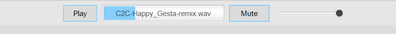

This tutorial will guide you through everything you need to know in order to use this application.
An example of what can be achieved using Ampl!tude
When opening the application, you will be prompted to either open an existing project or to create a new one. For this tutorial, select the option Create a new project with a sound file and click the Browse button to select and .wav sound file you would like. When you are satisfied with your selection, press Open.
You should now have the main view of the application open. To start creating your custom animation, click on the Rectangle button on the left side of the window. This will automatically add a rectangle shape to the canvas.
You can now edit the shape as you wish, by using the tools on the left side of the window, under the Edit The Shape title. Note that you can also edit the background by simply clicking on it. Clicking on a shape will then get you back to the Edit The Shape menu.
In order to make your shape move as the song progresses, you need to add Reactions to it. To do so, click on the rectangle you just created to select it, then click on the Add a reaction button on the right side of the window.
A new window should now open, allowing you to create a custom reaction.
First, select a reaction type. An Amplitude reaction will make the shape react based on how loud the song is, and a Frequency reaction will affect the shape based on how loud a specific frequency band is (For example, a drum in a song will generate a big frequency band around 20-100Hz).
Second, select the shape's property that will be affected by this reaction. A reaction can currently affect the size of a shape or its color.
Then enter a minimum and a maximum value that will modify the shape property that you selected. Keep in mind that those values should be decimals, 1 being the property doesn't change and 2 being it doubles. If you selected a Frequency reaction, you will also need to enter a range of frequencies that will affect this shape.
Use the Audio Player, located at the top of the window, to Play the song and watch the result of what you created! If the sound is too loud, use the Slider on the right to lower the volume.
Have fun!!
You now know everything you need to start creating your custom animations. Express your creativity, try new things and share your creations with your friends!